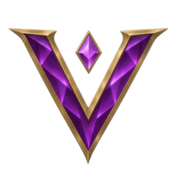

World of Warcraft: Forever addon suite
Veyra Forever
Customize your action bars, unit frames, minimap and tooltips, and find your way with an in-game quest tracker and navigation.
Veyra in game


Game data from ForeverDB
We plan to use ForeverDB to enrich the existing addon with reference data. Possible uses include adding item details to tooltips and showing quest locations in the quest tracker or its navigation.
Planned data source ForeverDB.net